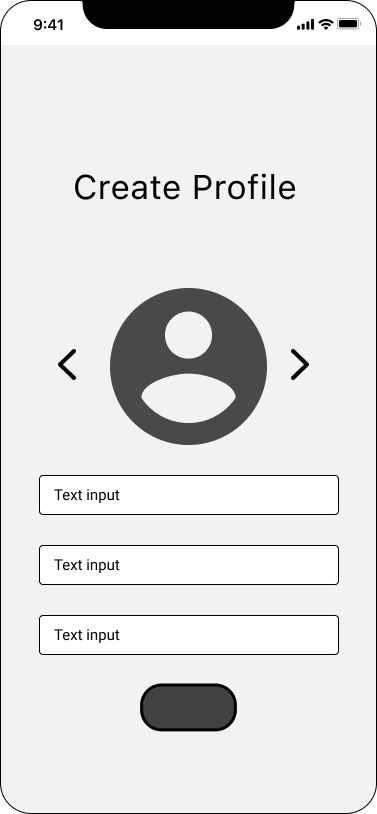
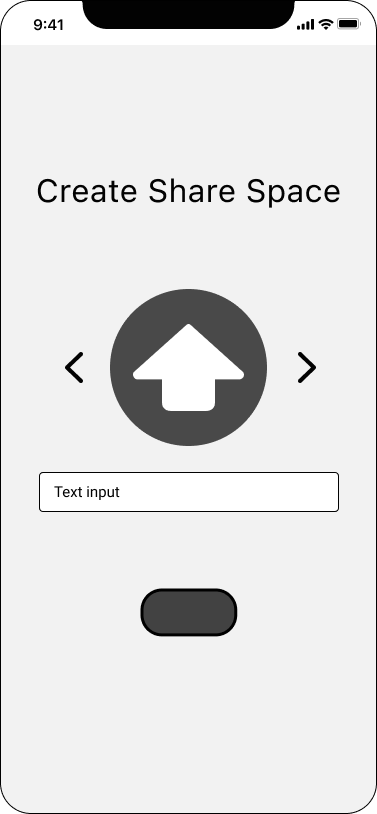
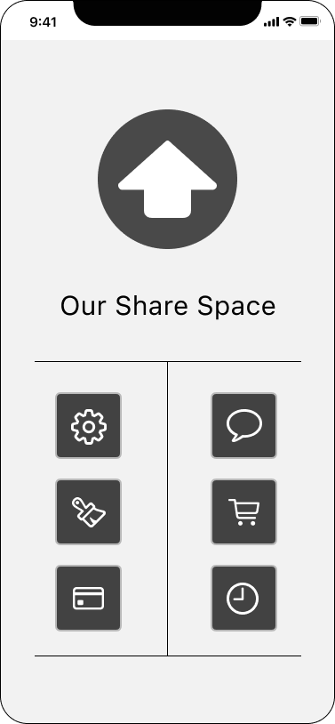
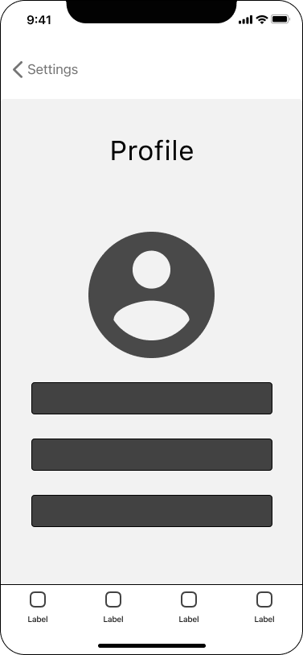
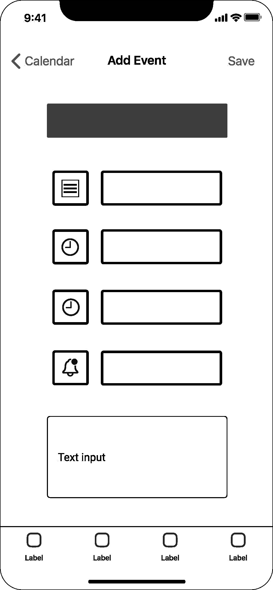

Living with roommates may be challenging. Even if you are
closest friends or romantic partners, negotiating expenses and making a flatmate chore list
is not exactly fun. Thankfully, there is a flatmate app that can make almost any task
more enjoyable and practical.
USER PERSONA
User personas are archetypical users whose goals and
characteristics represent theneeds of a larger group of users. Here we can see a description
including behaviour patterns, goals, skills, attitudes, background information, and the
environment in which a persona operates. (Faller).
The research of this app is based on the analysis of
millennials who work, study and have little time to organize the chores in the house.
UX USER FLOW
We can define User Flow as the path that a typical user
follows on a website or application to complete a task. The user flow comprises from the
point of their entry, adding the steps they execute until they meet the task with a
successful result (Pardo).
These are the principal flow diagrams based on some user
scenarios of the Our Share Space app.
Symbols
Scenario 1:
New user wants to add a chore to the list of
tasks.
Scenario 2:
The user tries to add an event to the calendar.
Scenario 3:
The user wants to settle up the rent bill
WIREFRAMES
Wireframes Design
When we work with low-fidelity design is understood as a
representation of the final design that shows only the elements relevant to the analysis,
regardless of the support. When it comes to a sketch, the low-fidelity design is called a
WireFrame. (Marron Carmona). Using wireframes can help programmers and designers communicate
the
architecture of the application they are building. Wireframes do not represent the final
design, but they can save design time and reduce adjustment efforts.
For this project, the following Wireframes were designed for
the application "Our Share Space" to represent the layout of the content and where
everything will reside on the user interface. These wireframes are shown in grayscale to
indicate an early stage in the app design process, which focuses on the layout's basics.
Welcome Page
Create Profile

Create Share Space

Add Flatmates
Settings
Menu

Messages
Groceries
Chores
Profile

Bills
Calendar
Add Expense
Add Task
Add Item
Bill Details
Add Event

Our Home
Payment
Help Center
Personal Balance
Wireflow
Wireflows combine the benefits of wireframes and flow
diagrams. The term wireflow was coined by Nielsen Norman Group after observing the
practice emerging in the field. Wireflows visually show how parts of the interface
change as the user interacts with the application. Additionally, annotations may be
added to indicate such factors as the transmission of data within the system (Angeles).
The next Wireflow was designed for the early stage of
prototyping the mobile application "Our Share Space" to represent all the
functionalities and interactions that the product offers.
Wireframe Video Prototype
A prototype represents the final product, including simulations
of the user interface interactions. Prototyping is the first phase in which designers can
actually interact with their creations (Babich). An example of a low-fidelity prototype
is a clickable prototype created from sketches or wireframes.
This low-fidelity prototype of the app is a rough
representation of the
design concept that will helps designers during the design process. This low-fidelity
prototype is limited in functions and interactions.